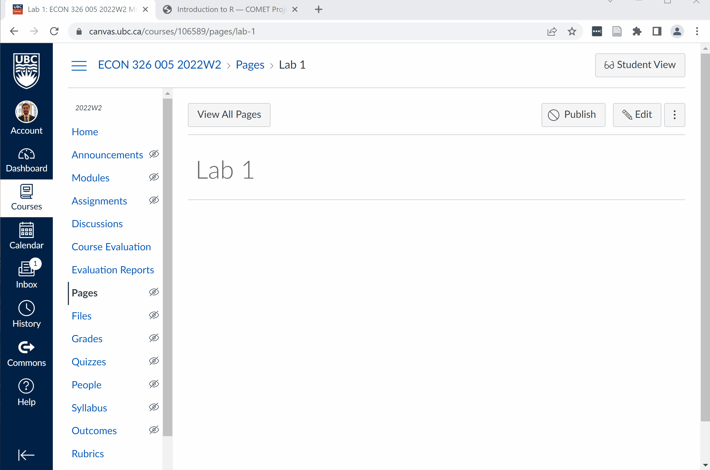

Using COMET
Using COMET for Teaching
The COMET modules can be used for teaching in a variety of ways. While most of them are designed as a 1-hour (or two 1-hour) labs, they can also be used in a classroom or as a pre-reading/self-study for more advanced students.
- Most of the modules include self tests which are designed to be formative in nature. Some also include short writing exercises.
- We would not recommend using these for grades, except if those grades are based on completion.
- Generally, modules are most engaging when someone is “animating” them, such as a TA or Instructor.
COMET modules can be launched interactively via a JupyterHub. If you are new to working with JupyterHub, you can orient yourself with the structure and interface in our Introduction to Jupyter Module.
- UBC offers an in-house JupyterHub called JupyterOpen for which these modules were designed.
- PIMS offers a non-UBC specific JupyterHub called Syzygy if you are at another institution or JupyterOpen goes down.
Interactive Modules
As we mentioned, all of the Jupyter Notebooks are interactive; to access a notebook, simply launch the appropriate hub from the top menu of this website (where it says, “LAUNCH COMET”). The notebooks can also be downloaded for local use (“LAUNCH COMET > LAUNCH LOCALLY”).
- The interactive element will redirect you to the JupyterHub of your choice, and then synch the modules over.
- The synching process uses a Jupyter extension called
nbgitpullerto perform this operation.
Occasionally, you can run into problems working with Jupyter in the cloud. If this occurs, you can try (a) deleting all of the COMET modules from your JupyterHub account, then trying to launch again, or (b) downloading the files manually, then uploading them. Option (b) will always work, even if it is a bit time exhuastive.
Using with Canvas
There are two ways to include a module in Canvas (or another LMS):
- Embed it in a Canvas page or assignment
- Include it as an external link
The advantage of option (1) is that you can include other material around the link (such as instructions). The advantage of option (2) is that it is easier.
Option 1: Embed in a Page
You can see a visualization below:

- First, create the page (or assignment) that you want to embed the page in.
- Then, edit the page, and switch the
HTMLedit mode - Copy the following text into the page:
<p><iframe src="PASTE URL HERE" width="800" height="3200" style="overflow: hidden;"></iframe></p>- Replace the
PASTE URL HEREtext with the URL of the COMET page you want - Optionally edit the
widthandheightoptions to change the size of the embed - Save the page; you should see the embedded page
You can now edit this page normally - for instance, by adding other material. You could also just add a URL as hyperlink instead of an embed. It’s up to you!
You can find more information about embedding webpages in canvas on this page.
Option 2: Direct Link
You can also just add a link directly to a Canvas module.
- On the Canvas module, click the (+) to add an item, then select “External URL”.
- Enter the URL of the COMET page and customize the name; this is what will show up on Canvas.
- You can choose to select the “load in a new tab” buttonif that is your preference.
Problems and Support
If you run into issues with a COMET module (say, a bug) you can create an issue to our GitHub directory using the “Report an issue” button at the top right of this page.
If you need other support, please contact
If the issue is about a JupyterHub, and not the notebook specifically, we unfortunately cannot help. Contact your hub maintainer for information.
- At UBC, this is the LTHub